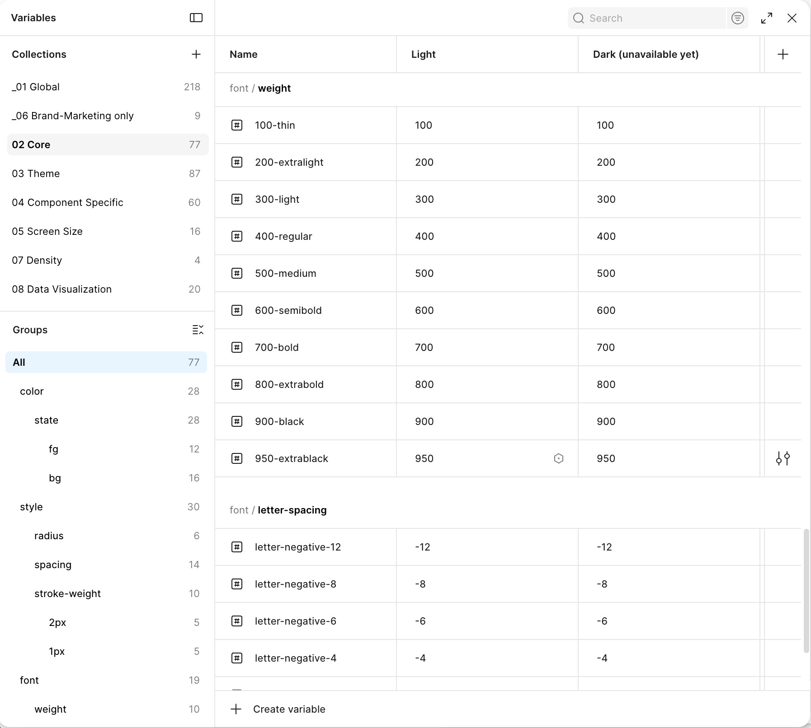
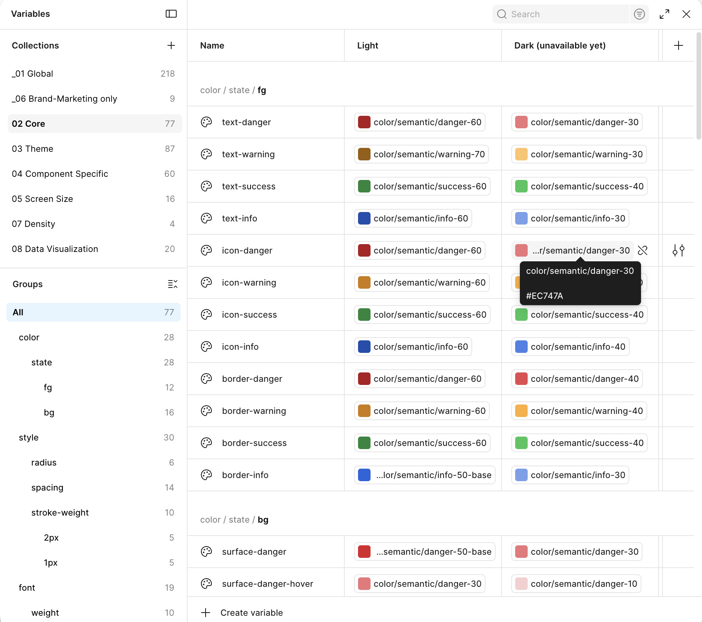
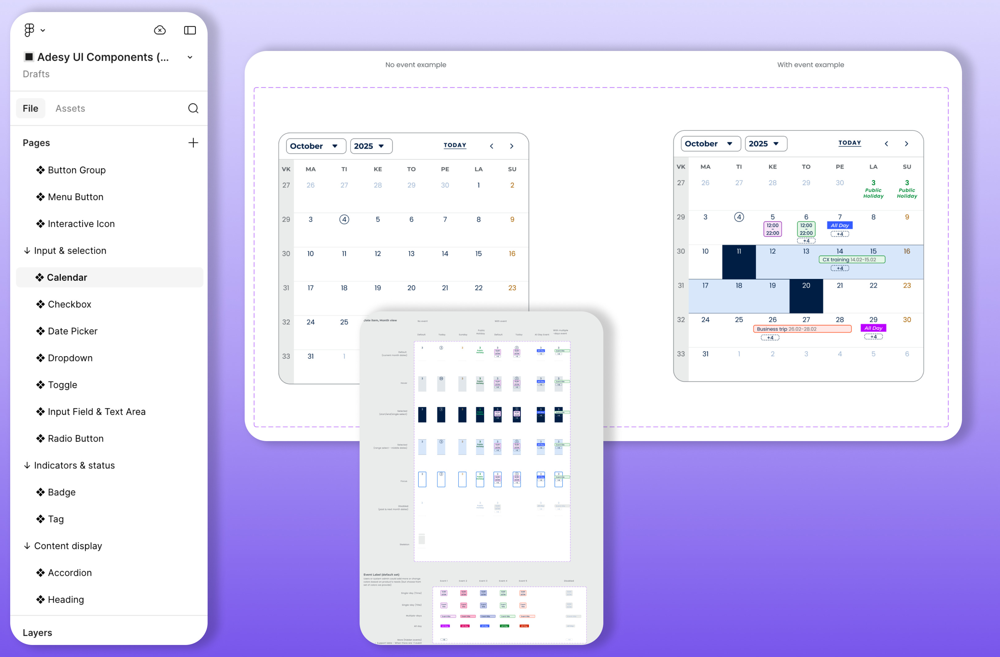
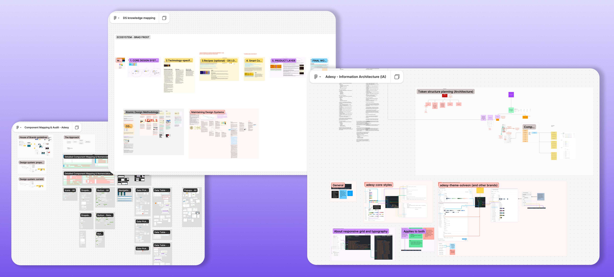

Design System
Adesy — Enterprise Design System
Building a scalable, accessible design system from scratch for 7+ SaaS enterprise products — collaborating across design, engineering, and product to establish shared standards, accelerate delivery, and maintain design quality at scale.
Highlighted links:
The Challenge
Fragmented design across multiple products
Multiple product teams were operating independently, each with inconsistent UI patterns, redundant components, and missing accessibility guidance. This led to duplicated work, longer design-to-dev cycles, and unpredictable user experiences across the product ecosystem.
Inconsistent patterns
Each team reinvented components, leading to visual and interaction inconsistencies across products.
Slow handoff process
Designers and developers had no shared language, causing delays and implementation mismatches.
Accessibility gaps
No standardized approach to WCAG compliance; teams struggled to implement accessible UX.
The Approach
A collaborative, token-first system
Starting from scratch, I led the design system effort alongside a dedicated team: a design system developer, design system owner, and myself as the design lead. We built Adesy through practical application, frequent feedback loops, and deep collaboration with product teams.
1. Token Design & Architecture
I mapped token naming conventions and grouped them into logical categories — color, typography, spacing, shadow. Working closely with developers, I translated design tokens into code, establishing the foundation for a sustainable component system.


2. Component Library Built on Tokens
Designed components using tokens to ensure consistency and flexibility. Each component was handed off to developers with clear specs, then I conducted implementation reviews to ensure quality standards and design fidelity were met.


3. Pilot Projects & Real-World Testing
I joined pilot projects as a UX Designer, testing components in practical screen designs. This hands-on approach ensured components were not just beautiful, but genuinely reusable and accessible in real product scenarios.


4. Stakeholder Collaboration & Shared Ownership
I collaborated with product stakeholders to identify shared patterns and needs. This collaborative approach built trust, fostered design system adoption, and ensured Adesy solved real problems for the entire organization.
Accessibility & Quality
WCAG 2.1 Level AA compliance
Accessibility was a core principle from day one. Every component was tested for color contrast, keyboard navigation, screen reader support, and semantic HTML. The result: a design system that works for everyone.
Outcomes
Measured impact
first beta launch
improved UX flows
products supported
WCAG 2.1 AA
Designer engagement
Increased adoption through transparent design system ownership and collaborative feedback. Teams felt ownership of shared standards.
Developer trust
Built strong relationships through consistent implementation reviews and clear specs, reducing back-and-forth cycles.
Faster delivery
Reusable components and tokens cut design-to-code time, accelerating time-to-market for new products.
Design System Workflow
Our collaborative process
Stakeholder Discovery
Learn shared patterns, pain points, and needs from product teams. Establish priorities for component library roadmap.
Design & Token Definition
Design components using token-based styling. Create clear specifications and handoff docs for developers.
Developer Implementation
Developers build components using tokens, ensuring accessibility and code quality from the start.
Implementation Review
Review built components against design specs, accessibility standards, and reusability criteria.
Pilot & Feedback
Test components in real products. Gather feedback from UX, dev, and stakeholders. Iterate.
Launch & Support
Release to all product teams with training and documentation. Support adoption and handle requests.
Key Learnings
Building a system is building relationships
1
Start with shared problems
Focus on patterns that solve real problems across multiple products. This builds buy-in and ensures adoption.
2
Collaborate early, iterate fast
Involve developers and designers in the design process. Frequent feedback loops catch issues early and build shared ownership.
3
Design for maintainability
Build components with future change in mind. Clear documentation and modular design make updates easier for teams.
4
Accessibility from day one
Don't treat accessibility as an afterthought. Build it into every component from the start. It benefits everyone.
Process and related materials
Highlighted resources of work processes

Guiding products how to onboard to use the design system

Testimonials about my work for Adesy and for products and brand alignment across teams

Adesy moodboard when drafting the visual design language for the design system with Solveon portfolio style.

- Component mapping and audit across products.
- Design System knowledge mapping.
- Information Architecture of Adesy, token structure mapping, aligning with developer to bring to the code base of the design system as the foundation.

Training designers to use the design system and also to enhence their skills for better design and handoff quality.
← Back to work